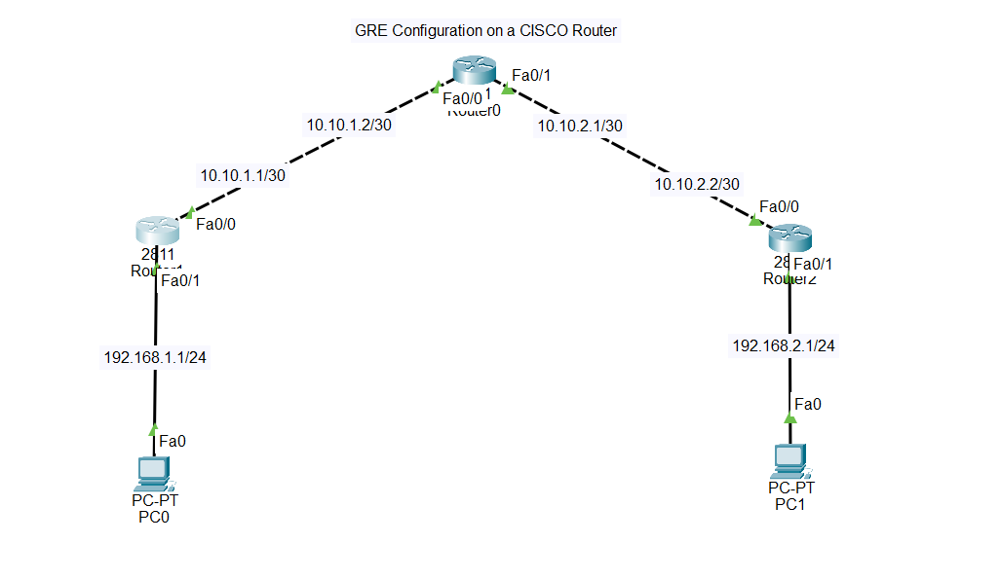

A Virtual Private Network (VPN) extends a private network across a public network such as the Internet.
It enables users to send and receive data securely over shared or public networks as if their devices were directly connected to the private network.
Generic Routing Encapsulation (GRE) is a tunneling protocol developed by Cisco Systems. It encapsulates various network layer protocols
inside virtual point-to-point or point-to-multipoint links over an IP network.
GRE creates a virtual tunnel between two endpoints, allowing packets from different protocols to be transported across networks that may not support those protocols directly.

1.At first interface up all the routers assigning the IPs.
2.Get the routing done for 3 routers.
Router1:
Router(config)#int tunnel 1
Router(config-if)#
%LINK-5-CHANGED: Interface Tunnel1, changed state to up
Router(config-if)#ip add 192.168.5.1 255.255.255.0 //Here 192.168.5.1 is the virtual IP assigned on tunnel interface no 1.
Router(config-if)#tunnel source f0/0
Router(config-if)#tunnel destination 10.10.2.2
Router2:
Router(config)#int tunnel 1
Router(config-if)#
%LINK-5-CHANGED: Interface Tunnel1, changed state to up
Router(config-if)#ip add 192.168.5.2 255.255.255.0 //Here source router Virtual IP & destination Virtual IP should be on the same subnet.
Router(config-if)#tunnel source f0/0
Router(config-if)#tunnel destination 10.10.1.1